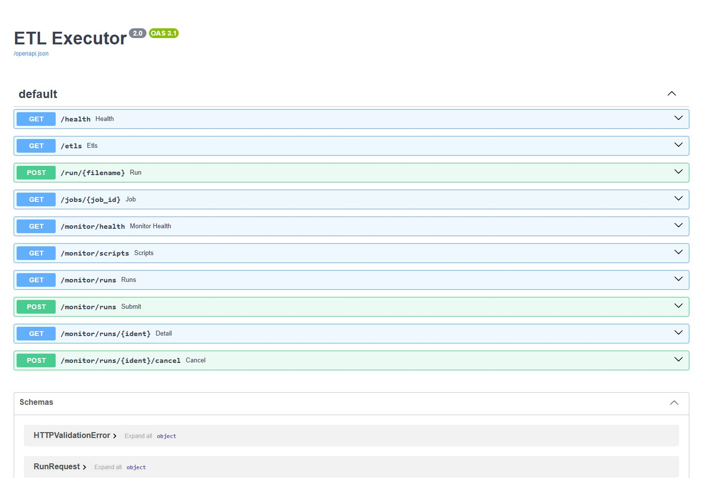

Ver imagem real ↗PIPELINES / DBT
Implementação localPlataforma de dados com Python + dbt
Python + dbtQuatro fluxos para negócios e histórico Zoho, chats Huggy e anúncios Meta. Ingestão Python e transformações dbt organizadas em Bronze, Silver e Gold.
- APIs
- Python / Bronze
- dbt / Silver
- Gold
4fluxos Python6modelos dbt39testes configurados
37.314 conversas · 28min41sExecução Huggy concluída · 27/10/2026 · job completo
Fonte e contexto dos números ↗